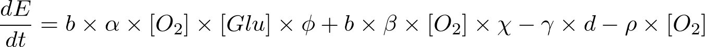

Multispecies Biofilms on Wound Surface
Description:
This tool aims to model two bacterial species which form a biofilm on the surface of a chronic wound. One species is Pseudomonas Aeruginosa which is an aerobic species while the other one Staphylococcus Aureus is anaerobic. Aerobic species provides a cover from atmospheric oxygen which has a negative effect on anaerobic cells. Each agent utilize glucose as a carbon source which is supplied at the bottom of the domain. This glucose are secreted by wound cells. In addition, air sources oxygen to the aerobic species.
The model is created to be used as a ENGR-599 class project. This model is developed by using agent-based modeling simulator PhysiCell [1]. The user interface is provided by xml2jupyter package [2] and uploaded to NanoHub-nano-bio branch.
Chemical Compositions
In this model there are three bio-chemical entities, which are glucose, oxygen, and ECM. We modeled a vertical environment where bottom two layers of voxels have wound cells while rest of the upper surface in air. Glucose and oxygen diffuses voxels by an efficient chemical diffusion tool which is called BioFVM [3]. However, since the domain is not horizontal and BioFVM does not support different diffusion coefficients for different voxels, we are making corrections accordingly to not allow glucose diffusion to air.
The domain has two different voxel types which are Dirichlet Nodes and Non-Dirichlet Nodes. The Dirichlet nodes supply oxygen with a constant concentration. However, non-dirichlet nodes enables to diffuse chemicals. There are two scenarios to be non-Dirichlet nodes. The first type of non-dirichlet voxels are initialized at the bottom of the domain that has wound cells. But the other type is nodes that are converted from Dirichlet voxels. This conversion occurs by ECM level. If the concentration of ECM, which is secreted by bacterial species, are greater than 1 mol, it became non-Dirichlet node which allows diffusion.
Oxygen:
This chemical is important for aerobic growth. Because it is sourced by air, dirichlet nodes are important for oxygen. Dirichlet boundary condition is defined as 20 mmHg. Diffusion length is 100 micro meter.
Glucose:
Glucose is important for both species in the generic energy equation. Wound cells secrete glucose with 10 mol/min rate and 10 mol saturation density. Secreted glucose diffuses through non-Dirichlet nodes to source bacterial cells.
ECM:
ECM is the backbone of structure and a decision-maker biological entity for non-Dirichlet voxels, which has a very small diffusion length as 0.1 micrometer. ECM is secreted by bacterial cells.
Agent Cells
Bacterial cells are really small (1 micron diameter), so it poses a difficult in visualization when it is compared to wound cells. Furthermore, simulating bacterial cells with their actual size would result in very large number of cells, hence increasing computational cost. Thus, our bacterial colonies are of same size as that of wound cells for simplicity. They can be considered as collection of 100 bacterial cells in one species micro-colony. But it is assumed that one colony can include one type of bacteria.
Key features in agents
Birth and Death
Wound cells do not have any growth or death rule but bacterial cells can proliferate or die according to one generic energy equation.

b: energy creation rate (1/min)
alpha: energy creation rate modifier for aerobic species (dimensionless)
phi: energy creation rate modulator for aerobic species (dimensionless)
beta: energy creation rate modifier for anaerobic species (dimensionless)
chi: energy creation rate modulator for anaerobic species (dimensionless)
gamma: energy usage rate modulator for both species (dimensionless)
d: energy usage rate (1/min)
rho: energy penalty for anaerobic species (dimensionless)
|
Species |
alpha |
beta |
gamma |
ɸ |
chi |
rho |
|
Aerobic |
1 |
0 |
0.5 |
1 |
1 |
0.1 |
|
Anaerobic |
0 |
1 |
0.5 |
1 |
2 |
1 |
Both species are non-motile as we assume that they are big colonies and they do not cooperatively move to somewhere. In addition, wound cells are non-movable which not allowing bacterial cells pushing the wound cells.
Agent types
Wound Cells(black cells)
These are non-movable cells present on the bottom surface through simulation. They are acting as glucose source. They are colored black in simulation
Staphylococcus Aureus (Anaerobe)(Red Cell)
Bacterial cells that can only survive if they are surrounded by Aerobic cells.
Pseudomonas Aeruginosa (Aerobe)(Blue Cells)
These cells secrete ECM in environment.They uptake glucose and oxygen from the environment
Tool Instructions
Modify the core parameters in the tool, such as, domain size, saving options, simulation
time.
Change the model parameters accordingly.
For the seeding method: You can use 4 options for seeding
vertical: Seeding species side by side
horizontal: Seeding species on top of them
random: Randomly seeding cells
box: Seeding aerobe that covers